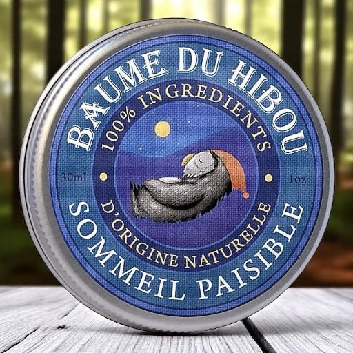
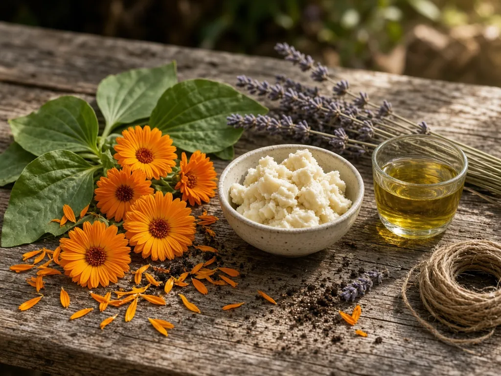
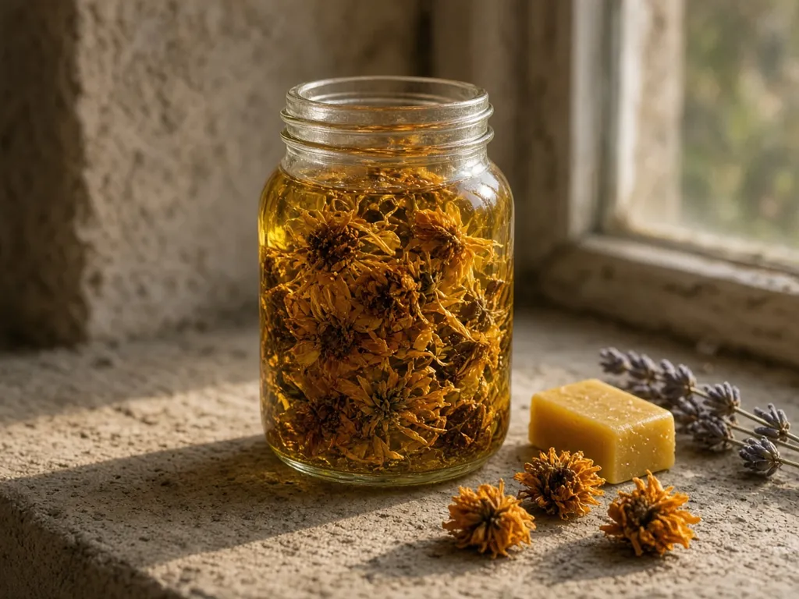
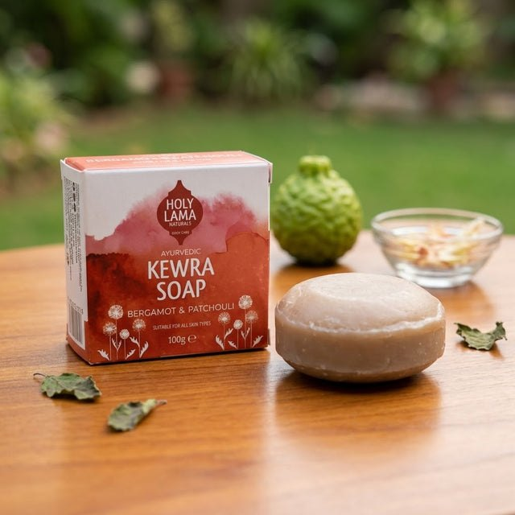
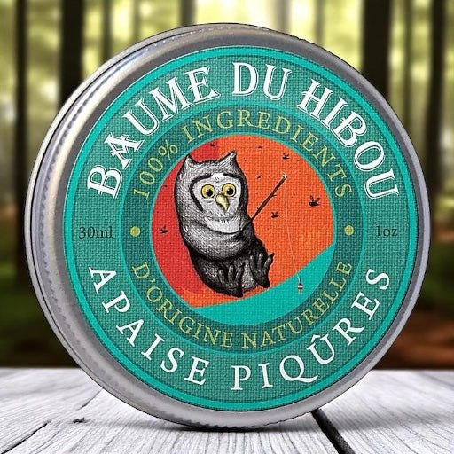
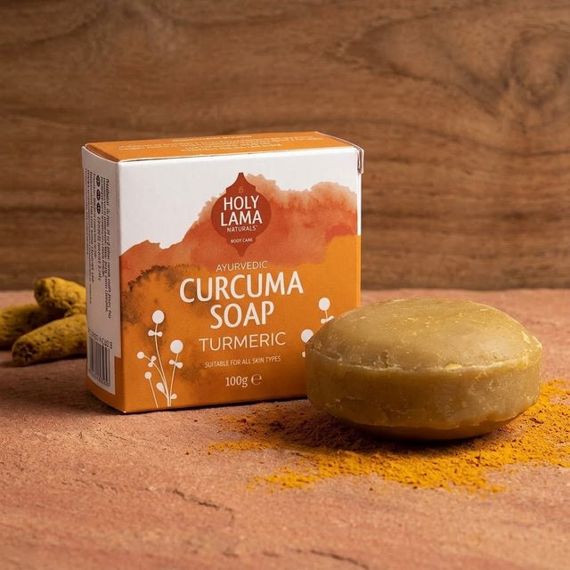

Balsamo Gufo bio
notte, 30 ml12,90 €
Il Balsamo del Gufo Garden è un trattamento naturale lenitivo, ideale dopo il lavoro in giardino.
Arricchito con estratti di Calendula e Piantaggine, lenisce la pelle arrossata dallo sfregamento e la ammorbidisce.
Una formula ricca e delicata, con ingredienti da agricoltura biologica e profumo 100% naturale.
Modalità d’uso. Applica una piccola quantità sulle mani e massaggia fino a completo assorbimento, anche più volte al giorno.
Avvertenze. Non indicato per bambini sotto i 7 anni e in gravidanza. Non applicare su ferite aperte.
Cosmetico per uso esterno: non sostituisce il parere di un medico.
Reso entro 14 giorni dalla ricezione
Ti mancano 37,10 € per la spedizione gratuita
Spedizione Express 5,90 €. Reso entro 14 giorni dalla ricezione, con spedizione del reso a tuo carico.
Dal grimorio
Quattro ingredienti, quattro carte. Tocca una carta per girarla.
Completano la formula l’olio d’oliva e di girasole, emollienti, e la cera d’api, che lascia sulle mani un velo protettivo.
Il momento


Due o tre pezzi che stanno bene con questo.



